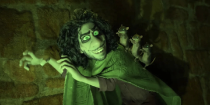
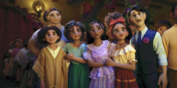
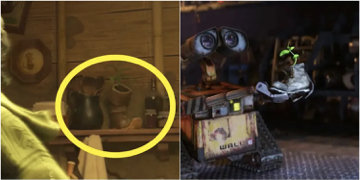
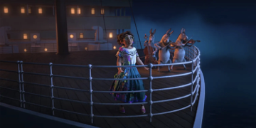
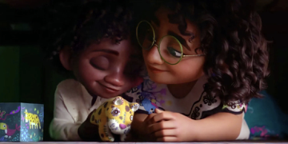

10 Important Details You Might Not Have Noticed in 'Encanto'
Published Mar 31, 2022
You might not want to talk about Bruno, but you may want to talk
about these cool details.
Disney's 60th animated feature, Encanto, is their
latest Oscar award-winning film that has audiences around the world buzzing.
Boasting a phenomenal soundtrack, Encanto tells the story of Mirabel (Stephanie
Beatriz), a member of the magical Madrigal family, who also happens to be
the only one without magic. Viewers follow Mirabel's journey as she struggles
to keep her family from breaking apart.
Encanto is a feast for the eyes,
with so much going on it can be hard to keep track of what's happening. The
film is jam-packed with references, hidden meanings, and a plethora of little
details. There are too many to list them all, but here's a handful of hidden
details that viewers may have missed while watching Encanto.
Camilo Sees Bruno As a
Villain

During "We Don't Talk about Bruno," Camilo's (Rhenzy Feliz) solo
verse has him skulking around and talking up Bruno as though he's a terrifying
supervillain. Camilo
transforms himself into Bruno, giving himself a wicked appearance in
an attempt to frighten Mirabel.
Although most of the family members sing about Bruno as a
mysterious figure, Camilo's portrayal is by far the most dramatically ominous.
This is due to him having the least experience with Bruno out of the family —
he would have been around five years old when Bruno disappeared and thus
conjured up his own exaggerated idea of what Bruno was like.
Abuela Was In the Vision
When Mirabel and Bruno (John Leguizamo) are viewing his
vision of her, she begs him to continue, so she can see the end. The vision
shows flashes of the future, and eventually reveals an image of Isabel (Diane
Guerrero) and Mirabel hugging.
What's easy to miss is the image right before Isabel is revealed.
The person Mirabel is initially hugging looks like Abuela (María Cecilia
Botero) before it morphs into Isabela. Bruno yells, "It's all out of
order!" This secretly hints that ultimately mending her relationship with
Abuela is the end goal here, and Isabela is the next step on that road.
The Flight of Butterflies
Butterflies appear all throughout Encanto in various forms.
Imprinted on the candle, woven into the design of Mirabel's shirt, splashed
across the walls of the nursery, and most noticeably in Bruno's vision are just
a few of the ways butterflies have made their way into the film.
Butterflies represent change, rebirth, and also good fortune.
Everyone in the film changed in some way, and for the better. The butterflies
in Encanto are also a nod to the book One Hundred Years of Solitude
by García Márquez, which Encanto shares many similarities with,
notably the yellow butterflies.
It's Not Easy Being Green
Image via Walt Disney Studios
Throughout the movie, viewers see that Mirabel is linked to the
color green, such as with her glasses and her bedroom. The only other person
linked to the color green in the movie is Bruno, as the film shows with his
poncho, his eyes, and his visions.
Bruno and Mirabel are both linked by green because they share a
kinship — both of them are the family outcasts, and both of them see the truth.
Green is also used to denote villains in movies, and both Mirabel and Bruno are
seen by others as antagonists who ruin people's lives.
Everyone is Dressed to
Impress

Everyone's outfits in Encanto represent something.
Mirabel's family each wears clothes representing their power, her father
Augustin has symbols of his kids on his outfit, and Mirabel herself has little
motifs signifying everyone in her family.
Mirabel's outfit has a bit of everything, indicating that she's
the one who holds everything together.
Her skirt has images of flowers, animals, weather, and even the
candle — all of these symbols are woven together with a string of thread that
looks remarkably similar to the sparkler trail Mirabel runs her hand over
during her solo song "Waiting On A Miracle".
Two Boots, One Meaning

When Mirabel goes looking for Bruno, she eventually discovers him
hiding away in the walls of the house. Bruno's little place is filled with
curiosities, a loving reference to Ariel's grotto in The Little Mermaid.
An item of particular interest in this scene is a plant in a boot
tucked away on a shelf. This plant is a direct reference to Wall-E,
where the plant in the boot is a signal for when humans can finally return
home. Therefore, in Encanto, the boot hints that Bruno will one day
reunite with his family.
Luisa is the Titanic

In the song
"Surface Pressure" the audience sees Luisa and Mirabel on
a ship coasting towards an iceberg with three donkeys playing music. This is a
reference to the RMS Titanic, and the donkeys represent the musicians
who kept playing while the ship went down.
While this scene seems random, it makes perfect sense. The Titanic
was known as an unsinkable ship, the greatest of her time. Both Luisa and her
family are like the Titanic, appearing unsinkable to everyone she knows, but
nobody sees the iceberg ahead that will eventually sink both her and the
Madrigals.
Bruno Sneaks Around in the
Background
Throughout the movie, and especially in Dolores' solo in "We Don't Talk
About Bruno," the audience can see quick flashes of Bruno in
the background, sneaking across the screen, and even bobbing his head to the
music.
While this is happening, Dolores is also singing about how she can
always hear him muttering and mumbling, and then later in the song she alludes
again to Bruno by singing, "I can hear him now" — this is well before
she confesses to Mirabel later that she hears him every day, but Mirabel failed
to pick up on her hints.
Mirabel Sees The Truth

Nervous about the upcoming ceremony where he gets his magical
gift, Antonio (Ravi Cabot-Conyers) hides under the bed with Mirabel, and
to help calm his nerves, Mirabel gives him a gift box painted with animals and
inside is a stuffed jaguar.
This scene is further proof of how Mirabel is similar to Bruno;
while he sees the future, Mirabel sees the present reality. She might not have been
aware at the time, but Mirabel knew long before anyone else that Antonio had a
special affinity with animals, hence her gift of a stuffed animal to him.
Mirabel Had Magic All Along
Viewers follow Mirabel's heartbreaking struggles of being the only
one in her family not to have magic, and the deterioration of
her relationship with her grandmother because of it.
While it might seem on the surface that Mirabel lacks magic, it slowly comes to life throughout the movie as she mends relationships within her family. It all pays off in the end after Casita has been rebuilt—she opens the door, and brings the house back to life again, showing both her family and the audience that, like her mom, her magic is in healing what's broken.